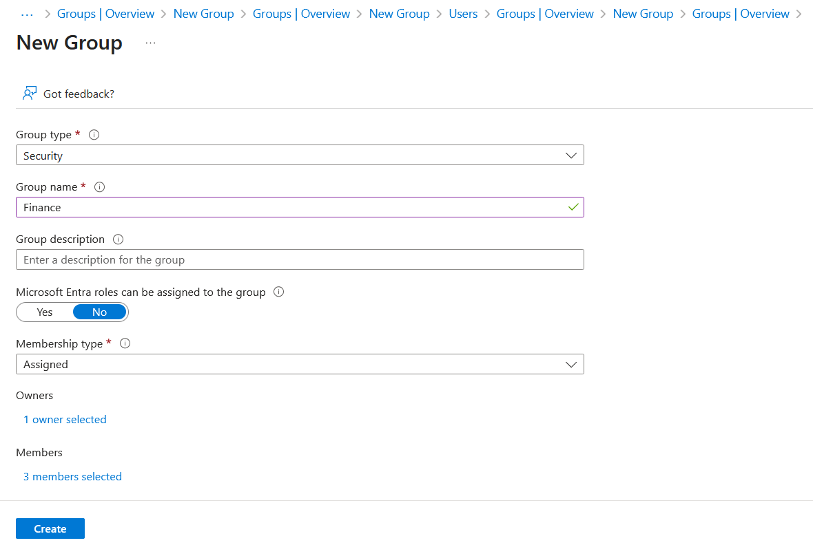

Groepen
Groepstypes
In Entra ID kan je twee verschillende types groepen aanmaken:
1. Security Group: een groepstype dat ontworpen is om de toegang van zowel gebruikers als toestellen tot verschillende resources te controleren. Het zorgt voor een consistente toepassing van machtigingen en instellingen voor alle leden.
2. Microsoft 365 Group: een groepstype dat ontworpen is voor samenwerking. Wanneer je een Microsoft 365 Group aanmaakt, worden automatisch een gedeelde agenda, een gedeeld e-mailadres en een SharePoint-site ingericht.
Lidmaatschapstypes
Wanneer je een groep aanmaakt, kan je verschillende lidmaatschapstypes (membership types) kiezen die bepalen hoe gebruikers of toestellen lid worden:
1. Assigned: gebruikers of toestellen worden handmatig aan de groep toegevoegd.
2. Dynamic User: gebruikers worden automatisch toegevoegd of verwijderd op basis van vooraf gedefinieerde regels.
3. Dynamic Device: toestellen worden automatisch toegevoegd of verwijderd op basis van vooraf gedefinieerde regels.
1. Assigned-groepen
- Ga in Entra ID naar Groups en selecteer New Group.
- Group type: kies Security.
- Group name: geef een naam voor de groep in.
- (Optioneel) Voeg een groepsbeschrijving toe.
- Membership type: selecteer Assigned.
- Owners: kies de gebruikers die het lidmaatschap van de groep mogen beheren.
- Members: selecteer de gebruikers die tot deze groep moeten behoren.
- Klik op Create.

2. Dynamische groepen
In plaats van groepen handmatig te beheren, kan je dynamische groepen aanmaken, waarbij gebruikers of toestellen automatisch worden toegevoegd of verwijderd op basis van hun eigenschappen.
- Vul net als bij het aanmaken van een statische groep de groepsgegevens in. Selecteer bij Membership type Dynamic User.
- Klik op Add dynamic query.
- Kies een property.
- Selecteer een operator.
- Geef een value in voor de regel.
- Klik op Save om de dynamische regel toe te passen.
- Klik op Create om het aanmaken van de groep af te ronden.
Leden worden niet onmiddellijk aan een dynamische groep toegevoegd. Microsoft geeft aan dat het tot 24 uur kan duren voordat een dynamische groep volledig is opgevuld. In de praktijk gebeurt dat meestal binnen enkele seconden tot enkele minuten, afhankelijk van het aantal gebruikers in je Entra-directory.
Als je een regel wil maken waarbij meer dan één waarde aanvaard moet worden, kan je de operator in gebruiken. Het veld value moet dan als volgt ingevuld worden: ["<value 1>", "<value 2>", ... ]
Voorbeeld:
["France", "Belgium", "Netherlands"]
Licenties aan groepen toewijzen
Net zoals je licenties aan individuele gebruikers kan toewijzen, kan je ze ook aan groepen toewijzen. Een typische workflow is:
- Maak een dynamische Security Group aan.
- Wijs een licentie toe aan deze dynamische groep.
- Wanneer een nieuwe gebruiker met een specifieke eigenschap wordt aangemaakt, wordt hij automatisch aan de groep toegevoegd en krijgt hij de licentie.
Onderstaande stappen tonen hoe je een licentie aan een groep toewijst:
- Ga naar https://admin.microsoft.com.
- Navigeer in het linkermenu naar Teams & groups en klik op Active teams & groups.
- Selecteer in het bovenste menu Security groups.
- Klik op de groep waaraan je een licentie wil toewijzen.
- Selecteer Licenses and apps.
- Kies de gewenste licentie.
- Klik op Save changes.
Rollen toewijzen
In het vorige hoofdstuk (4-Microsoft 365) gaven we een overzicht van alle standaardrollen die beschikbaar zijn in M365. Nu we geleerd hebben hoe we groepen aanmaken, komen we hierop terug en gebruiken we de groepen om rollen toe te wijzen.
Om een standaardrol aan een groep toe te wijzen, gebruik je een role-assignable Security Group. Dit type groep wordt gebruikt om dezelfde beheerdersmachtigingen aan meerdere gebruikers te geven. Dynamische groepen kunnen hiervoor niet gebruikt worden.
- Open in Entra ID Groups en selecteer New group.
- Kies Security als groepstype en Assigned als lidmaatschapstype.
- Schakel Microsoft Entra roles can be assigned to the group in.
- Voeg de vereiste beheerders als leden toe en maak de groep aan.
- Open Roles, selecteer de vereiste rol en kies Add assignments.
- Selecteer de role-assignable groep en bevestig de toewijzing.
Elk lid van de groep krijgt de machtigingen die bij de rol horen. Wanneer een gebruiker uit de groep wordt verwijderd, verliest hij ook die machtigingen. Wijs enkel de rol toe die nodig is voor de taken van de groep en gebruik een afzonderlijke groep voor elke rol.
Voorbeelden uit de praktijk:
- Helpdeskgroep: leden krijgen de rol Password administrator, zodat ze wachtwoorden kunnen resetten zonder volledige beheerdersmachtigingen te krijgen.
- Groep voor gebruikersbeheer: het IT-supportteam krijgt de rol User administrator om gebruikersaccounts aan te maken, uit te schakelen en bij te werken.
- Groep voor licentiebeheer: het team voor applicatiebeheer krijgt de rol License administrator om Microsoft 365-licenties toe te wijzen en te verwijderen.
- Groep Global administrator: deze groep moet zo weinig mogelijk leden bevatten en mag enkel gebruikt worden voor taken die volledige toegang vereisen.
Microsoft Learn
Op de volgende Microsoft Learn-pagina vind je een gedetailleerd overzicht van groepsbeheer:
- Een groep aanmaken
- Leden of eigenaars aan een groep toevoegen
- Leden of eigenaars van een groep verwijderen
- Groepsinstellingen bewerken
- Een groep verwijderen
- Een rol aan een groep toewijzen